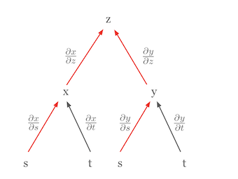

Code
!pip install dldna[colab] # in Colab
# !pip install dldna[all] # in your local 
“Every number is composed of units, and every number can be divided into units” - Al-Khwarizmi (780-850), Persian mathematician
This chapter explores the mathematical concepts that form the core of deep learning. Deep learning models are composed of complex mathematical functions. A deep understanding of linear algebra, calculus, probability, and statistics is essential to grasp the principles of model behavior, improve performance, and design new models. For example, understanding matrix operations is crucial for understanding the behavior of Convolutional Neural Networks (CNNs), and differentiation and optimization play a key role in understanding the learning process of models.
If this chapter feels difficult, you can move on to the next one and come back to it later. It’s best to revisit and get familiar with it from time to time.
Linear algebra is the foundation of deep learning. From matrix operations to advanced optimization techniques, linear algebra is an essential tool. This section will cover basic concepts such as vectors, matrices, and tensors, as well as advanced topics like singular value decomposition and principal component analysis.
Vectors and matrices are the most basic operations for representing data and transforming it.
Vector Basics
A vector is a mathematical object that represents a quantity with both magnitude and direction. The mathematical definition is the same, but the perspective varies depending on the field of application.
Understanding these different perspectives is important when working with vectors in deep learning. In deep learning, vectors are mainly used from a computer science perspective, but mathematical operations and physical intuition are also utilized.
In deep learning, vectors are often used to represent multiple features of data simultaneously. For example, a 5-dimensional vector used in a housing price prediction model can be represented as:
\(\mathbf{v} = \begin{bmatrix} v_1 \\ v_2 \\ v_3 \\ v_4 \\ v_5 \end{bmatrix}\)
Each element of this vector represents different characteristics of the house. \(v_1\): area of the house (square meters), \(v_2\): number of rooms, \(v_3\): age of the house (years), \(v_4\): distance to the nearest school (kilometers), \(v_5\): crime rate (percentage)
Deep learning models can use these multi-dimensional vectors as input to predict housing prices. Vectors are used to effectively represent and process complex real-world data with multiple features.
In NumPy, vectors can be easily created and used.
!pip install dldna[colab] # in Colab
# !pip install dldna[all] # in your localimport numpy as np
# Vector creation
v = np.array([1, 2, 3])
# Vector magnitude (L2 norm)
magnitude = np.linalg.norm(v)
print(f"Vector magnitude: {magnitude}")
# Vector normalization
normalized_v = v / magnitude
print(f"Normalized vector: {normalized_v}")Vector magnitude: 3.7416573867739413
Normalized vector: [0.26726124 0.53452248 0.80178373]A closer look at the concept of vectors reveals distinctions between row vectors and column vectors, as well as covectors and contravariant vectors used in physics and engineering.
Row Vectors and Column Vectors
Vectors are generally represented as column vectors. Row vectors can be considered as the transpose of column vectors. More mathematically accurate, row vectors can also be referred to as dual vectors or covectors.
Column vector: \(\mathbf{v} = \begin{bmatrix} v_1 \\ v_2 \\ v_3 \end{bmatrix}\), Row vector: \(\mathbf{v}^T = [v_1 \quad v_2 \quad v_3]\)
Row vectors and column vectors have different properties. Row vectors act on column vectors as linear functions to produce scalars, which is represented by the dot product operation.
\[\mathbf{u}^T\mathbf{v} = u_1v_1 + u_2v_2 + u_3v_3\]
Covectors and Contravariant Vectors
In physics and engineering, the concepts of covectors (covariant vectors) and contravariant vectors are importantly dealt with. This represents the transformation characteristics of vectors according to coordinate system changes.
This distinction is crucial in tensor notation. For example, \(T^i_j\) indicates that the upper index \(i\) represents contravariance and the lower index \(j\) represents covariance. Notably, in general relativity, these concepts of covariance and contravariance are treated as very important.
Application in Deep Learning
In deep learning, the distinction between covariance and contravariance is often not explicitly emphasized. The reasons for this include:
However, in specific fields, particularly physics-based machine learning or geometric deep learning, these concepts may still be important. For instance, in deep learning models that utilize differential geometry, the distinction between covariance and contravariance can play a critical role in model design and interpretation.
In conclusion, while the basic concept of vectors in deep learning is simplified, more complex mathematical concepts still play significant roles in advanced model design and special applications.
The vector space, a core concept in linear algebra, provides a fundamental framework for representing and transforming data in deep learning. In this deep dive, we’ll explore the rigorous definition of vector spaces and related concepts, along with examples of their applications in deep learning.
A vector space consists of a set \(V\) that satisfies eight axioms, along with addition and scalar multiplication operations. Here, elements of \(V\) are called vectors, and scalars are real numbers \(\mathbb{R}\) or complex numbers \(\mathbb{C}\). (In deep learning, we mainly use real numbers.)
Vector Addition: For any two elements \(\mathbf{u}, \mathbf{v}\) in \(V\), \(\mathbf{u} + \mathbf{v}\) is also an element of \(V\). (Closed under addition)
Scalar Multiplication: For any element \(\mathbf{u}\) in \(V\) and scalar \(c\), \(c\mathbf{u}\) is also an element of \(V\). (Closed under scalar multiplication)
Vector Addition and Scalar Multiplication must satisfy the following eight axioms. (\(\mathbf{u}, \mathbf{v}, \mathbf{w} \in V\), \(c, d\): scalars)
Example: * \(\mathbb{R}^n\): \(n\)-dimensional real vector space (n-tuples of real numbers) * \(\mathbb{C}^n\): \(n\)-dimensional complex vector space * \(M_{m \times n}(\mathbb{R})\): \(m \times n\) real matrix space * \(P_n\): space of polynomials with real coefficients of degree at most \(n\) * \(C[a, b]\): space of real-valued continuous functions on the interval \([a, b]\)
A subset \(W\) of a vector space \(V\) is called a subspace if it satisfies the following conditions:
In other words, a subspace is a subset of a vector space that is itself a vector space.
Given vectors \(\mathbf{v}_1, \mathbf{v}_2, ..., \mathbf{v}_k\) in a vector space \(V\) and scalars \(c_1, c_2, ..., c_k\), an expression of the form \(c_1\mathbf{v}_1 + c_2\mathbf{v}_2 + ... + c_k\mathbf{v}_k\) is called a linear combination.
A set of vectors {\(\mathbf{v}_1, \mathbf{v}_2, ..., \mathbf{v}_k\)} is said to be linearly independent if the only way to express the zero vector as a linear combination of these vectors is with all coefficients equal to zero:
\(c_1\mathbf{v}_1 + c_2\mathbf{v}_2 + ... + c_k\mathbf{v}_k = \mathbf{0}\) implies \(c_1 = c_2 = ... = c_k = 0\)
If this condition is not satisfied (i.e., there exist non-zero scalars \(c_1, ..., c_k\) such that the equation holds), the set of vectors is said to be linearly dependent.
Intuitive meaning:
Key point: While a basis for a given vector space is not unique, all bases have the same number of vectors.
The span of a set of vectors {\(\mathbf{v}_1, \mathbf{v}_2, ..., \mathbf{v}_k\)} is the set of all possible linear combinations of these vectors:
span{\(\mathbf{v}_1, \mathbf{v}_2, ..., \mathbf{v}_k\)} = {\(c_1\mathbf{v}_1 + c_2\mathbf{v}_2 + ... + c_k\mathbf{v}_k\) | \(c_1, c_2, ..., c_k\) are scalars}
In other words, it is the set of all vectors that can be formed using the given vectors. The span is always a subspace. #### Vector Space Examples in Deep Learning
Measuring the magnitude of vectors or the distance between two vectors is crucial in deep learning. It is utilized in various areas, including loss functions, regularization, and similarity measurements.
The Lp-norm of a vector \(\mathbf{x} = [x_1, x_2, ..., x_n]\) is defined as follows (\(p \ge 1\)).
\(||\mathbf{x}||_p = \left( \sum_{i=1}^{n} |x_i|^p \right)^{1/p}\)
The distance between two vectors \(\mathbf{x}\) and \(\mathbf{y}\) is generally defined as the norm of their difference.
\(d(\mathbf{x}, \mathbf{y}) = ||\mathbf{x} - \mathbf{y}||\)
Examples of Applications in Deep Learning:
Note: In deep learning, it is essential to distinguish between “distance” and “similarity.” A smaller distance indicates higher similarity, while higher similarity means closer proximity. Cosine similarity is one of the commonly used methods for measuring similarity in deep learning.
Affine space is a generalization of the vector space concept in linear algebra, and it is a useful tool for understanding deep learning models from a geometric perspective. In particular, affine transformations represent a form of linear transformation with bias added, which is frequently used in deep learning.
An affine space consists of three elements: a set of points, a vector space, and an operation that adds a point and a vector. More specifically:
This addition operation must satisfy two properties:
Important Characteristics
Given points \(P_1, P_2, ..., P_k\) in an affine space \(\mathcal{A}\) and scalars \(c_1, c_2, ..., c_k\), the following expression is called an affine combination:
\(c_1P_1 + c_2P_2 + ... + c_kP_k\) (provided that \(c_1 + c_2 + ... + c_k = 1\))
Important: Unlike linear combinations, affine combinations require that the sum of the coefficients is 1. This condition reflects the property of affine spaces that there is no “origin”.
An affine transformation is a function from one affine space to another, expressed as a combination of a linear transformation and a translation. That is, an affine transformation includes both a linear transformation and a bias:
\(f(P) = T(P) + \mathbf{b}\)
Matrix Representation:
Affine transformations can be represented using augmented matrices. In an \(n\)-dimensional affine space, using \((n+1)\)-dimensional vectors allows the representation of affine transformations as \((n+1) \times (n+1)\) matrices. \(\begin{bmatrix} \mathbf{y} \\ 1 \end{bmatrix} = \begin{bmatrix} \mathbf{A} & \mathbf{b} \\ \mathbf{0}^T & 1 \end{bmatrix} \begin{bmatrix} \mathbf{x} \\ 1 \end{bmatrix}\)
Recently, some deep learning research has proposed models that remove the bias term for computational efficiency, model interpretability, or specific theoretical backgrounds.
Reasons for Removing Bias
The concept of affine space and affine transformation can be used for geometric interpretation of deep learning models, analysis of generalization performance, and design of new architectures.
Terms related to tensors, vectors, and matrices are used slightly differently in mathematics, physics, and computer science, which can cause confusion. To avoid this confusion, let’s clarify the key concepts. First, we’ll look at the rank and dimensions of a tensor. The rank of a tensor refers to the number of indices it has. For example, a scalar is a rank 0 tensor, a vector is a rank 1 tensor, and a matrix is a rank 2 tensor. Tensors with three or more dimensions are generally just called tensors.
The term “dimension” can have two different meanings, so caution is needed. First, it can be used to mean the same as the rank of a tensor. In this case, a vector would be called a one-dimensional tensor and a matrix would be called a two-dimensional tensor. Second, it can be used to refer to the length or size of an array. For example, the dimension of a vector \(\mathbf{a} = [1, 2, 3, 4]\) would be said to be 4.
It’s also important to know the differences in terminology between fields. In physics, the number of elements has physical meaning, so the terms are used more strictly. On the other hand, in computer science, vectors, matrices, and tensors are often treated as arrays of numbers, and the term “dimension” is used interchangeably to refer to both the number of data elements and the number of indices.
To avoid confusion due to these differences in terminology, several things need to be kept in mind. The meaning of a term can vary depending on the context, so careful interpretation is necessary. It’s necessary to clearly distinguish what is meant by “dimension” in papers or books. In particular, in the field of deep learning, both the rank of a tensor and the size of an array are often referred to as “dimensions”, so consistent interpretation is important.
In deep learning frameworks, the term ‘dimension’ or ‘axis’ is used to represent the shape of a tensor. For example, in PyTorch, you can check the size of each dimension of a tensor using tensor.shape or tensor.size(). In this book, we will use ‘dimension’ to refer to the rank of a tensor and the length/size of an array as the value of each element in the shape or dimension.
Let’s take a look at the math needed for deep learning training. The linear transformation, which is the core operation of neural networks, is expressed very simply in forward calculations. In this section, we will focus on the basic linear operations before passing through the activation function.
The basic form of forward operations is as follows.
\[\boldsymbol y = \boldsymbol x \boldsymbol W + \boldsymbol b\]
Here, \(\boldsymbol x\) represents the input, \(\boldsymbol W\) represents the weight, \(\boldsymbol b\) represents the bias, and \(\boldsymbol y\) represents the output. In neural network mathematics, inputs and outputs are often represented as vectors, and weights are represented as matrices. Bias (\(\boldsymbol b\)) is sometimes expressed as a scalar value, but it should be accurately represented as a vector of the same form as the output.
Matrices and Linear Transformations
Matrices are powerful tools for expressing linear transformations. Linear transformations are processes that map a point in vector space to another point, which can be seen as a transformation of the entire space. For materials that help visualize these concepts, I recommend 3Blue1Brown’s video “Linear transformations and matrices”[1]. This video intuitively explains basic concepts of linear algebra and clearly shows how matrices transform spaces.
When input data \(\boldsymbol x\) is represented as a vector, it means a single data point, and the length of the vector becomes the number of features. However, in actual training processes, multiple data are usually processed at once. In this case, the input becomes a matrix \(\boldsymbol X\) of the form (n, m), where n represents the number of data and m represents the number of features.
In actual deep learning models, input data can take the form of tensors with dimensions higher than 2D matrices.
To handle such high-dimensional data, neural networks use various forms of linear and nonlinear transformations. In the reverse propagation process of linear transformations, gradients are calculated and transmitted in reverse order to each layer to update parameters. This process can be complex, but it is efficiently performed using automatic differentiation tools. Linear transformation is a basic component of deep learning models, but the actual performance of models is achieved through combinations with nonlinear activation functions. In the next section, we will look at how this nonlinearity increases the expressive power of models.
# if in Colab, plase don't run this and below code. just see the result video bleow the following cell.
#from manim import * %%manim -qh -v WARNING LinearTransformations
from manim import *
from manim import config
class LinearTransformations(ThreeDScene):
def construct(self):
self.set_camera_orientation(phi=75 * DEGREES, theta=-45 * DEGREES)
axes = ThreeDAxes(x_range=[-6, 6, 1], y_range=[-6, 6, 1], z_range=[-6, 6, 1], x_length=10, y_length=10, z_length=10).set_color(GRAY)
self.add(axes)
# --- 3D Linear Transformation (Rotation and Shear) ---
title = Text("3D Linear Transformations", color=BLACK).to_edge(UP)
self.play(Write(title))
self.wait(1)
# 1. Rotation around Z-axis
text_rotation = Text("Rotation around Z-axis", color=BLUE).scale(0.7).next_to(title, DOWN, buff=0.5)
self.play(Write(text_rotation))
cube = Cube(side_length=2, fill_color=BLUE, fill_opacity=0.5, stroke_color=WHITE, stroke_width=1)
self.play(Create(cube))
self.play(Rotate(cube, angle=PI/2, axis=OUT, about_point=ORIGIN), run_time=2)
self.wait(1)
self.play(FadeOut(text_rotation))
# 2. Shear
text_shear = Text("Shear Transformation", color=GREEN).scale(0.7).next_to(title, DOWN, buff=0.5)
self.play(Write(text_shear))
# Define the shear transformation matrix. This shears in x relative to y, and in y relative to x.
shear_matrix = np.array([
[1, 0.5, 0],
[0.5, 1, 0],
[0, 0, 1]
])
self.play(
cube.animate.apply_matrix(shear_matrix),
run_time=2,
)
self.wait(1)
# Add transformed axes to visualize the shear
transformed_axes = axes.copy().apply_matrix(shear_matrix)
self.play(Create(transformed_axes), run_time=1)
self.wait(1)
self.play(FadeOut(cube), FadeOut(transformed_axes), FadeOut(text_shear))
# --- 2D to 3D Transformation (Paraboloid) ---
text_2d_to_3d = Text("2D to 3D: Paraboloid", color=MAROON).scale(0.7).next_to(title, DOWN, buff=0.5)
self.play(Write(text_2d_to_3d))
square = Square(side_length=4, fill_color=MAROON, fill_opacity=0.5, stroke_color=WHITE, stroke_width=1)
self.play(Create(square))
def paraboloid(point): # Function for the transformation
x, y, _ = point
return [x, y, 0.2 * (x**2 + y**2)] # Adjust scaling factor (0.2) as needed
paraboloid_surface = always_redraw(lambda: Surface(
lambda u, v: axes.c2p(*paraboloid(axes.p2c(np.array([u,v,0])))),
u_range=[-2, 2],
v_range=[-2, 2],
resolution=(15, 15), # Added for smoothness
fill_color=MAROON,
fill_opacity=0.7,
stroke_color=WHITE,
stroke_width=0.5
).set_shade_in_3d(True))
self.play(
Transform(square, paraboloid_surface),
run_time=3,
)
self.wait(2)
self.play(FadeOut(square), FadeOut(text_2d_to_3d))
# --- 3D to 2D Transformation (Projection) ---
text_3d_to_2d = Text("3D to 2D: Projection", color=PURPLE).scale(0.7).next_to(title, DOWN, buff=0.5)
self.play(Write(text_3d_to_2d))
sphere = Sphere(radius=1.5, fill_color=PURPLE, fill_opacity=0.7, stroke_color=WHITE, stroke_width=1, resolution=(20,20)).set_shade_in_3d(True)
self.play(Create(sphere))
def project_to_2d(mob, alpha):
for p in mob.points:
p[2] *= (1-alpha)
self.play(
UpdateFromAlphaFunc(sphere, project_to_2d),
run_time=2
)
self.wait(1)
# Show a circle representing the final projection
circle = Circle(radius=1.5, color=PURPLE, fill_opacity=0.7, stroke_color = WHITE, stroke_width=1)
self.add(circle)
self.wait(1)
self.play(FadeOut(sphere), FadeOut(text_3d_to_2d), FadeOut(circle), FadeOut(title))
self.wait(1)
import logging
logging.getLogger("manim").setLevel(logging.WARNING)
if __name__ == "__main__":
config.video_dir = "./"
scene = LinearTransformations()
scene.render()Challenge: How can we efficiently represent and operate on multidimensional data?
Researcher’s Dilemma: In the early days of deep learning, researchers had to deal with various forms of data such as images, text, and audio. This data was difficult to express using simple vectors or matrices, and a method to effectively process complex data structures was needed. Additionally, efficient operation methods for processing large amounts of data quickly were also important tasks.
Tensors are the fundamental mathematical objects used to represent data and model parameters in deep learning. They can be thought of as multidimensional arrays, generalizing scalars, vectors, and matrices. Tensors are classified according to their dimension (dimension, rank) as follows:
In deep learning, we mainly deal with the following types of tensors:
The basic linear transformation of a neural network is as follows:
\(y_j = \sum\limits_{i} x_i w_{ij} + b_j\)
where \(i\) is the index of the input and \(j\) is the index of the output. This can be expressed in vector and matrix form as follows:
\(\boldsymbol x = \begin{bmatrix}x_{1} & x_{2} & \cdots & x_{i} \end{bmatrix}\)
\(\boldsymbol W = \begin{bmatrix} w_{11} & \cdots & w_{1j} \ \vdots & \ddots & \vdots \ w_{i1} & \cdots & w_{ij} \end{bmatrix}\)
\(\boldsymbol b = \begin{bmatrix}b_{1} & b_{2} & \cdots & b_{j} \end{bmatrix}\)
\(\boldsymbol y = \boldsymbol x \boldsymbol W + \boldsymbol b\)
The main features of tensor operations are as follows:
Broadcasting: enables operations between tensors of different sizes.
Dimension reduction: reduces specific dimensions of a tensor using operations such as sum() and mean().
Reshaping: changes the shape of a tensor to transform it into a tensor with different dimensions.
One of the most important operations in neural network learning is gradient calculation. The main gradient calculations are as follows:
Gradient with respect to input: \(\frac{\partial \boldsymbol y}{\partial \boldsymbol{x}}\)
Gradient with respect to weights: \(\frac{\partial \boldsymbol y}{\partial \boldsymbol W}\)
These gradients represent the change in output with respect to changes in input and weights, and are the core of backpropagation algorithms. Tensor operations form the basis of modern deep learning, enabling efficient learning and inference of large models through highly parallel processing using GPUs. Additionally, automatic differentiation of tensor operations enables efficient gradient computation, which has become a major breakthrough in modern deep learning research. This goes beyond simple numerical computations, making the structure and learning process of models themselves programmable targets. We will look at practical examples of tensor operations in more detail in Chapter 3 on PyTorch.
Singular Value Decomposition (SVD) and Principal Component Analysis (PCA) are powerful mathematical tools used to reduce the dimensionality of high-dimensional data and extract the main features inherent in the data.
SVD is a method of decomposing any \(m \times n\) matrix \(\mathbf{A}\) into the product of three matrices as follows:
\(\mathbf{A} = \mathbf{U\Sigma V^T}\)
where,
Key Idea:
Application in Deep Learning:
PCA is a method of finding the direction (principal component) that maximizes the variance of the data and projecting the data onto a lower-dimensional space. It is closely related to SVD and finds the principal components through eigenvalue decomposition of the data’s covariance matrix.
PCA Steps: 1. Data Centering: Makes the average of each feature 0. 2. Covariance Matrix Calculation: Calculates the covariance matrix that represents the correlation between features. 3. Eigenvalue Decomposition: Calculates the eigenvalues and eigenvectors of the covariance matrix. * Eigenvector: Direction of the principal component * Eigenvalue: Size of the variance in the direction of the principal component 4. Principal Component Selection: Selects \(k\) eigenvectors corresponding to the largest eigenvalues. (Reduces data to \(k\)-dimension) 5. Data Projection: Projects data onto the selected \(k\) principal components to reduce dimensions.
Application in Deep Learning:
SVD vs. PCA
SVD and PCA are mathematical tools that play an important role in efficiently representing data and improving model performance in deep learning.
from dldna.chapter_02.pca import visualize_pca
visualize_pca()
Explained variance ratio: 0.5705This example demonstrates the ability of PCA to project complex 2D structures into 1D. For spiral data, a single principal component cannot capture all variability, but it can capture the major trend of the data. The explained variance ratio can be used to evaluate how well this 1D representation preserves the structure of the original data.
These techniques are powerful tools for extracting important patterns from complex data.
SVD and PCA are powerful tools for extracting important patterns from high-dimensional data and simplifying complex data structures.
Challenge: How can we efficiently compute the derivative of a complex nested function?
Researcher’s Concern: Early deep learning researchers had to use backpropagation algorithms to update neural network weights. However, since neural networks are structures with multiple layers of functions connected in a complicated way, calculating the derivative of the loss function for each weight was a very difficult problem. In particular, as the layers deepened, the amount of computation increased exponentially, making learning inefficient.
The most important calculus rule used in deep learning is the chain rule. The chain rule is a powerful and elegant rule that allows us to express the derivative of a composite function as the product of the derivatives of the constituent functions. Visualizing the chain rule can make it easier to understand. For example, let’s assume that \(z\) is a function of \(x\) and \(y\), and \(x\) and \(y\) are functions of \(s\) and \(t\), respectively. This relationship can be represented as a tree diagram.

In this diagram, the partial derivative of \(z\) with respect to \(s\), \(\frac{\partial z}{\partial s}\), is the sum of the products of the partial derivatives along all paths from \(z\) to \(s\).
\(\frac{\partial z}{\partial s} = \frac{\partial z}{\partial x} \frac{\partial x}{\partial s} + \frac{\partial z}{\partial y} \frac{\partial y}{\partial s}\)
In this formula,
Let’s consider another case where the chain rule is used to express a total derivative. Suppose \(z\) is a function of mutually independent variables. In this case, the chain rule simplifies to the form of a total derivative. For example, if \(z = f(x, y)\) and \(x = g(s)\) and \(y = h(t)\), and \(s\) and \(t\) are independent, then the total derivative of \(z\) can be expressed as follows.

\(dz = \frac{\partial z}{\partial x}dx + \frac{\partial z}{\partial y}dy\)
Here, \(dx = \frac{\partial x}{\partial s}ds\) and \(dy = \frac{\partial y}{\partial t}dt\), so we finally get the following form.
\(dz = \frac{\partial z}{\partial x}\frac{\partial x}{\partial s}ds + \frac{\partial z}{\partial y}\frac{\partial y}{\partial t}dt\)
This equation looks similar to the chain rule, but it actually represents a total derivative. The important point here is that since \(s\) and \(t\) are independent, \(\frac{\partial x}{\partial t}\) and \(\frac{\partial y}{\partial s}\) are 0. This form is a total derivative. A total derivative represents the total effect of changes in all independent variables on the function value and can be expressed as the sum of partial derivatives for each variable. The chain rule’s structure allows the derivative of a complex function to be broken down into simpler components. This is especially important in deep learning, where neural networks are composed of multiple layers of functions. Using tree diagrams, the chain rule can be applied even in more complicated situations by finding all paths from the dependent variable to the independent variables, multiplying the partial derivatives along each path, and then summing these products.
The chain rule is the mathematical foundation for backpropagation algorithms in deep learning, enabling efficient updates of weights in complex neural network models.
Challenge: How can we generalize the derivative for functions with various forms of input and output?
Researcher’s Concerns: Early deep learning primarily dealt with scalar functions, but it gradually had to handle functions with vectors, matrices, and other forms of input and output. Expressing and calculating the derivatives of these functions in a unified manner was an essential task for developing deep learning frameworks.
In deep learning, we deal with functions that have various forms of input (scalars, vectors, matrices, tensors) and output (scalars, vectors, matrices, tensors). Accordingly, the expression of the function’s derivative also changes. The key is to consistently express these various cases of derivatives and apply the chain rule to calculate them efficiently.
| Input Form | Output Form | Derivative Expression | Dimension |
|---|---|---|---|
| Vector (\(\mathbf{x}\)) | Vector (\(\mathbf{f}\)) | Jacobian Matrix (\(\mathbf{J} = \frac{\partial \mathbf{f}}{\partial \mathbf{x}}\)) | \(n \times m\) |
| Matrix (\(\mathbf{X}\)) | Vector (\(\mathbf{f}\)) | 3D Tensor (generally not well-handled) | - |
| Vector (\(\mathbf{x}\)) | Matrix (\(\mathbf{F}\)) | 3D Tensor (generally not well-handled) | - |
| Scalar (\(x\)) | Vector (\(\mathbf{f}\)) | Column Vector (\(\frac{\partial \mathbf{f}}{\partial x}\)) | \(n \times 1\) |
| Vector (\(\mathbf{x}\)) | Scalar (\(f\)) | Gradient (\(\nabla f = \frac{\partial f}{\partial \mathbf{x}}\)) | \(m \times 1\) (column vector) |
| Matrix (\(\mathbf{X}\)) | Scalar (\(f\)) | Matrix (\(\frac{\partial f}{\partial \mathbf{X}}\)) | \(m \times n\) |
Note:
Thus, the concepts of gradients and Jacobian matrices are essential tools for generalizing derivatives of various forms of functions in deep learning and efficiently training models through backpropagation.
Definition: The Hessian matrix is a square matrix of second partial derivatives of a scalar-valued function. Given a function \(f(x_1, x_2, ..., x_n)\), the Hessian matrix \(H\) is defined as follows:
\[ H = \begin{bmatrix} \frac{\partial^2 f}{\partial x_1^2} & \frac{\partial^2 f}{\partial x_1 \partial x_2} & \cdots & \frac{\partial^2 f}{\partial x_1 \partial x_n} \\ \frac{\partial^2 f}{\partial x_2 \partial x_1} & \frac{\partial^2 f}{\partial x_2^2} & \cdots & \frac{\partial^2 f}{\partial x_2 \partial x_n} \\ \vdots & \vdots & \ddots & \vdots \\ \frac{\partial^2 f}{\partial x_n \partial x_1} & \frac{\partial^2 f}{\partial x_n \partial x_2} & \cdots & \frac{\partial^2 f}{\partial x_n^2} \end{bmatrix} \]
Meaning:
The core of neural network learning is the backpropagation algorithm. Backpropagation is an efficient method that updates the weights and biases of each layer by propagating errors from the output layer to the input layer. In this process, the chain rule allows for the calculation of complex composite functions by expressing their derivatives as products of simpler derivatives.
A neural network can be seen as a composition of multiple layers of functions. For example, a two-layer neural network can be expressed as follows:
\(\mathbf{z} = f_1(\mathbf{x}; \mathbf{W_1}, \mathbf{b_1})\) \(\mathbf{y} = f_2(\mathbf{z}; \mathbf{W_2}, \mathbf{b_2})\)
Here, \(\mathbf{x}\) is the input, \(\mathbf{z}\) is the output of the first layer (input to the second layer), \(\mathbf{y}\) is the final output, and \(\mathbf{W_1}\), \(\mathbf{b_1}\) are the weights and biases of the first layer, while \(\mathbf{W_2}\), \(\mathbf{b_2}\) are those of the second layer.
During backpropagation, we need to calculate the gradients of the loss function \(E\) with respect to each parameter (\(\frac{\partial E}{\partial \mathbf{W_1}}\), \(\frac{\partial E}{\partial \mathbf{b_1}}\), \(\frac{\partial E}{\partial \mathbf{W_2}}\), \(\frac{\partial E}{\partial \mathbf{b_2}}\)). Applying the chain rule, we can compute these as follows:
\(\frac{\partial E}{\partial \mathbf{W_2}} = \frac{\partial E}{\partial \mathbf{y}} \frac{\partial \mathbf{y}}{\partial \mathbf{W_2}}\) \(\frac{\partial E}{\partial \mathbf{b_2}} = \frac{\partial E}{\partial \mathbf{y}} \frac{\partial \mathbf{y}}{\partial \mathbf{b_2}}\) \(\frac{\partial E}{\partial \mathbf{W_1}} = \frac{\partial E}{\partial \mathbf{y}} \frac{\partial \mathbf{y}}{\partial \mathbf{z}} \frac{\partial \mathbf{z}}{\partial \mathbf{W_1}}\) \(\frac{\partial E}{\partial \mathbf{b_1}} = \frac{\partial E}{\partial \mathbf{y}} \frac{\partial \mathbf{y}}{\partial \mathbf{z}} \frac{\partial \mathbf{z}}{\partial \mathbf{b_1}}\)
By using the chain rule, we can efficiently calculate the gradients of each parameter in a complex neural network as products of sequential derivatives. Section 2.2.4 provides a detailed theoretical dive into this process.
Based on these concepts, the next section will take a closer look at the method of calculating gradients in the backpropagation process with specific examples.
The core of backpropagation is to calculate the gradient of the loss function and update the weights. Let’s take a simple linear transformation (\(\mathbf{y} = \mathbf{xW} + \mathbf{b}\)) as an example to illustrate the backpropagation process.
Backpropagation is an algorithm that updates the weights by propagating the error calculated in the output layer towards the input layer, adjusting each weight according to its contribution to the error. The key step in this process is calculating the gradient of the loss function with respect to each weight.
If we use the mean squared error (MSE) as the loss function, the gradient of the loss function \(E\) with respect to the output \(\mathbf{y}\) is as follows:
\(E = \frac{1}{M} \sum_{i=1}^{M} (y_i - \hat{y}_i)^2\)
\(\frac{\partial E}{\partial \mathbf{y}} = \frac{2}{M}(\mathbf{y} - \hat{\mathbf{y}})\)
Here, \(y_i\) is the actual value, \(\hat{y}_i\) is the predicted value of the model, and \(M\) is the number of data points.
We can calculate the gradient of the loss function \(E\) with respect to the weights \(\mathbf{W}\) by applying the chain rule.
\(\frac{\partial E}{\partial \mathbf{W}} = \frac{\partial E}{\partial \mathbf{y}} \frac{\partial \mathbf{y}}{\partial \mathbf{W}}\)
Since \(\mathbf{y} = \mathbf{xW} + \mathbf{b}\), we have \(\frac{\partial \mathbf{y}}{\partial \mathbf{W}} = \mathbf{x}^T\).
Ultimately, the gradient with respect to the weights is expressed as:
\(\frac{\partial E}{\partial \mathbf{W}} = \mathbf{x}^T \frac{\partial E}{\partial \mathbf{y}}\)
The gradient of the loss function \(E\) with respect to the input \(\mathbf{x}\) is used to propagate the error to the previous layer.
\(\frac{\partial E}{\partial \mathbf{x}} = \frac{\partial E}{\partial \mathbf{y}} \frac{\partial \mathbf{y}}{\partial \mathbf{x}}\)
Since \(\mathbf{y} = \mathbf{xW} + \mathbf{b}\), we have \(\frac{\partial \mathbf{y}}{\partial \mathbf{x}} = \mathbf{W}^T\).
Therefore, the gradient with respect to the input is:
\(\frac{\partial E}{\partial \mathbf{x}} = \frac{\partial E}{\partial \mathbf{y}} \mathbf{W}^T\)
Backpropagation is carried out through the following key steps. 1. Forward Propagation: Input data \(\mathbf{x}\) is passed through the neural network to calculate the predicted value \(\hat{\mathbf{y}}\). 2. Loss Function Calculation: The predicted value \(\hat{\mathbf{y}}\) and actual value \(\mathbf{y}\) are compared to calculate the loss \(E\). 3. Backward Propagation: * The gradient of the loss function with respect to the output \(\frac{\partial E}{\partial \mathbf{y}}\) is calculated in the output layer. * Using the chain rule, the gradient of the loss with respect to the weights \(\frac{\partial E}{\partial \mathbf{W}} = \mathbf{x}^T \frac{\partial E}{\partial \mathbf{y}}\) is calculated. * The gradient with respect to the input \(\frac{\partial E}{\partial \mathbf{x}} = \frac{\partial E}{\partial \mathbf{y}} \mathbf{W}^T\) is calculated, propagating the error to the previous layer. 4. Weight Update: The computed gradients are used to update the weights using optimization algorithms such as gradient descent.
The backpropagation algorithm is the core of deep learning model training, allowing for effective approximation of complex nonlinear functions.
The core of backpropagation is to calculate the gradient of the loss function and update the weights. Let’s take a simple linear transformation (\(\mathbf{y} = \mathbf{xW} + \mathbf{b}\)) as an example to illustrate the backpropagation process. Here, we will explain the calculation process in detail.
The goal of neural network learning is to minimize the loss function \(E\). If we use the mean squared error (MSE) as the loss function, it can be expressed as follows:
\(E = f(\mathbf{y}) = \frac{1}{M} \sum_{i=1}^{M} (y_i - \hat{y}_i)^2\)
where \(y_i\) is the actual value, \(\hat{y}_i\) is the predicted value, and \(M\) is the number of data (or the dimension of the output vector).
The derivative of \(E\) with respect to \(\mathbf{y}\) is as follows:
\(\frac{\partial E}{\partial \mathbf{y}} = \frac{2}{M} (\mathbf{y} - \hat{\mathbf{y}})\)
where \(\mathbf{y}\) is the output vector of the neural network, and \(\hat{\mathbf{y}}\) is the actual value (target) vector. Since \(y_i\) is a constant (each element of the target), only the partial derivative with respect to \(\mathbf{y}\) remains.
Note: In the example code in Chapter 1, we used the term \(-\frac{2}{M}\), which included a negative sign (-) in the definition of the loss function. Here, we use the general definition of MSE, so we use the positive term \(\frac{2}{M}\). In actual learning, the absolute size of this constant is not important because it is multiplied by the learning rate.
Now, let’s calculate the gradient of the loss function \(E\) with respect to the weights \(\mathbf{W}\). \(E = f(\mathbf{y})\) and \(\mathbf{y} = \mathbf{xW} + \mathbf{b}\). \(\mathbf{x}\) is the input vector, \(\mathbf{W}\) is the weight matrix, and \(\mathbf{b}\) is the bias vector.
Computational Graph:
To visually represent the backpropagation process, we can use a computational graph. (Insert computational graph figure)
\(E\) is a scalar value, and for each \(w_{ij}\) (each element of the weight matrix \(\mathbf{W}\)), we need to find the partial derivative of \(E\). \(\mathbf{W}\) is a matrix of size (input dimension) x (output dimension). For example, if the input is 3-dimensional (\(x_1, x_2, x_3\)) and the output is 2-dimensional (\(y_1, y_2\)), then \(\mathbf{W}\) is a 3x2 matrix.
\(\frac{\partial E}{\partial \mathbf{W}} = \begin{bmatrix} \frac{\partial E}{\partial w_{11}} & \frac{\partial E}{\partial w_{12}} \\ \frac{\partial E}{\partial w_{21}} & \frac{\partial E}{\partial w_{22}} \\ \frac{\partial E}{\partial w_{31}} & \frac{\partial E}{\partial w_{32}} \end{bmatrix}\)
The derivative of \(E\) with respect to \(\mathbf{y}\) can be expressed as a row vector: \(\frac{\partial E}{\partial \mathbf{y}} = \begin{bmatrix} \frac{\partial E}{\partial y_1} & \frac{\partial E}{\partial y_2} \end{bmatrix}\). (Using numerator notation). Strictly speaking, the gradient should be expressed as a column vector, but here we use a row vector for convenience of calculation.
By the chain rule, \(\frac{\partial E}{\partial \mathbf{W}} = \frac{\partial E}{\partial \mathbf{y}} \frac{\partial \mathbf{y}}{\partial \mathbf{W}}\)
\(\frac{\partial E}{\partial w_{ij}} = \sum_k \frac{\partial E}{\partial y_k} \frac{\partial y_k}{\partial w_{ij}}\) (here \(k\) is the index of the output vector \(\mathbf{y}\))
Expanding the equation,
\(\frac{\partial E}{\partial \mathbf{W}} = \frac{\partial E}{\partial y_1} \frac{\partial y_1}{\partial \mathbf{W}} + \frac{\partial E}{\partial y_2} \frac{\partial y_2}{\partial \mathbf{W}}\)
Now, we need to calculate \(\frac{\partial y_k}{\partial w_{ij}}\). Since \(\mathbf{y} = \mathbf{xW} + \mathbf{b}\),
\(y_1 = x_1w_{11} + x_2w_{21} + x_3w_{31} + b_1\) \(y_2 = x_1w_{12} + x_2w_{22} + x_3w_{32} + b_2\)
\(\frac{\partial y_1}{\partial w_{ij}} = \begin{bmatrix} \frac{\partial y_1}{\partial w_{11}} & \frac{\partial y_1}{\partial w_{12}} \\ \frac{\partial y_1}{\partial w_{21}} & \frac{\partial y_1}{\partial w_{22}} \\ \frac{\partial y_1}{\partial w_{31}} & \frac{\partial y_1}{\partial w_{32}} \end{bmatrix} = \begin{bmatrix} x_1 & 0 \\ x_2 & 0 \\ x_3 & 0 \end{bmatrix}\)
\(\frac{\partial y_2}{\partial w_{ij}} = \begin{bmatrix} 0 & x_1 \\ 0 & x_2 \\ 0 & x_3 \end{bmatrix}\)
Therefore,
\(\frac{\partial E}{\partial \mathbf{W}} = \frac{\partial E}{\partial y_1} \begin{bmatrix} x_1 & 0 \\ x_2 & 0 \\ x_3 & 0 \end{bmatrix} + \frac{\partial E}{\partial y_2} \begin{bmatrix} 0 & x_1 \\ 0 & x_2 \\ 0 & x_3 \end{bmatrix} = \begin{bmatrix} \frac{\partial E}{\partial y_1}x_1 & \frac{\partial E}{\partial y_2}x_1 \\ \frac{\partial E}{\partial y_1}x_2 & \frac{\partial E}{\partial y_2}x_2 \\ \frac{\partial E}{\partial y_1}x_3 & \frac{\partial E}{\partial y_2}x_3 \end{bmatrix} = \begin{bmatrix} x_1 \\ x_2 \\ x_3 \end{bmatrix} \begin{bmatrix} \frac{\partial E}{\partial y_1} & \frac{\partial E}{\partial y_2} \end{bmatrix} = \mathbf{x}^T \frac{\partial E}{\partial \mathbf{y}}\)
Generalization:
If the input is a \(1 \times m\) row vector \(\mathbf{x}\) and the output is a \(1 \times n\) row vector \(\mathbf{y}\), then the weight \(\mathbf{W}\) becomes an \(m \times n\) matrix. In this case, \(\frac{\partial E}{\partial \mathbf{W}} = \mathbf{x}^T \frac{\partial E}{\partial \mathbf{y}}\)
The gradient of the loss function \(E\) with respect to the input \(\mathbf{x}\) can also be calculated using the chain rule.
\(\frac{\partial E}{\partial \mathbf{x}} = \frac{\partial E}{\partial \mathbf{y}} \frac{\partial \mathbf{y}}{\partial \mathbf{x}}\)
Since \(\mathbf{y} = \mathbf{xW} + \mathbf{b}\), we have \(\frac{\partial \mathbf{y}}{\partial \mathbf{x}} = \mathbf{W}^T\).
Therefore,
\(\frac{\partial E}{\partial \mathbf{x}} = \frac{\partial E}{\partial \mathbf{y}} \mathbf{W}^T\)
The gradient of the loss function with respect to the bias \(\mathbf{b}\) is as follows.
\(\frac{\partial E}{\partial \mathbf{b}} = \frac{\partial E}{\partial \mathbf{y}} \frac{\partial \mathbf{y}}{\partial \mathbf{b}}\)
Since \(\mathbf{y} = \mathbf{xW} + \mathbf{b}\), we have \(\frac{\partial \mathbf{y}}{\partial \mathbf{b}} = \begin{bmatrix} 1 & 1 & \dots & 1\end{bmatrix}\) (a \(1 \times n\) row vector of all ones)
\(\frac{\partial E}{\partial \mathbf{b}} = \frac{\partial E}{\partial \mathbf{y}}\)
Through such mathematical processes, deep learning models can learn complex nonlinear transformations from input data to output data.
Deep learning is deeply rooted in probability and statistical theory to handle the uncertainty of data. In this chapter, we will explore core concepts such as probability distributions, expectations, Bayes’ theorem, and maximum likelihood estimation. These concepts are essential for understanding the learning and inference processes of models.
Challenge: How can we mathematically model the uncertainty of real data?
Researcher’s Concern: Early machine learning researchers recognized that real-world data cannot be explained by deterministic rules. Data contains measurement errors, noise, and unpredictable variability. Mathematical tools were needed to quantify this uncertainty and reflect it in models.
A probability distribution represents all possible outcomes and their occurrence probabilities. It can be divided into discrete and continuous probability distributions.
Discrete probability distributions deal with cases where the values that a random variable can take are finite or countable. The characteristic is that a clear probability can be assigned to each possible outcome.
Mathematically, a discrete probability distribution is represented by a probability mass function (PMF).
\[P(X = x) = p(x)\]
where \(p(x)\) is the probability that \(X\) takes the value \(x\). The main properties are as follows:
Representative examples include the Bernoulli distribution, binomial distribution, and Poisson distribution.
The probability mass function for rolling a die is as follows:
\[P(X = x) = \begin{cases} \frac{1}{6} & \text{if } x \in \{1, 2, 3, 4, 5, 6\} \ 0 & \text{otherwise} \end{cases}\]
Discrete probability distributions are used in various fields such as classification problems, reinforcement learning, and natural language processing in machine learning and deep learning. The following is the result of simulating a die roll.
from dldna.chapter_02.statistics import simulate_dice_roll
simulate_dice_roll()
A continuous probability distribution deals with the case where the random variable can take on continuous values. Unlike discrete probability distributions, the probability at a specific point is 0, and we deal with probabilities of intervals. Mathematically, a continuous probability distribution is represented by a probability density function (PDF).
\[f(x) = \lim_{\Delta x \to 0} \frac{P(x < X \leq x + \Delta x)}{\Delta x}\]
Here, f(x) represents the probability density near x. The main properties are as follows:
Representative examples include the normal distribution, exponential distribution, and gamma distribution.
The probability density function of the normal distribution is as follows.
\[f(x) = \frac{1}{\sigma\sqrt{2\pi}} e^{-\frac{(x-\mu)^2}{2\sigma^2}}\]
Here, μ is the mean and σ is the standard deviation.
Continuous probability distributions are importantly used in various machine learning and deep learning application fields such as regression problems, signal processing, and time series analysis.
from dldna.chapter_02.statistics import plot_normal_distribution
plot_normal_distribution()
The expected value is an important concept that represents the central tendency of a probability distribution. It can be interpreted as the weighted average of all possible values of a random variable. For discrete probability distributions, the expected value is calculated as follows:
\[E[X] = \sum_{i} x_i P(X = x_i)\]
where \(x_i\) is a possible value of the random variable X, and \(P(X = x_i)\) is the probability of that value. For continuous probability distributions, the expected value is calculated through integration.
\[E[X] = \int_{-\infty}^{\infty} x f(x) dx\]
where \(f(x)\) is the probability density function. The expected value has the following important properties:
In deep learning, the expected value is crucial for minimizing loss functions or estimating model parameters. For example, the mean squared error (MSE) is defined as:
\[MSE = E[(Y - \hat{Y})^2]\]
where \(Y\) is the actual value, and \(\hat{Y}\) is the predicted value.
The concept of expected value provides a theoretical basis for optimization algorithms such as stochastic gradient descent and is also essential for estimating value functions in reinforcement learning.
from dldna.chapter_02.statistics import calculate_dice_expected_value
calculate_dice_expected_value()Expected value of dice roll: 3.5These fundamental concepts of probability and statistics play a crucial role in the design, learning, and evaluation process of deep learning models. In the next section, we will look at Bayes’ theorem and maximum likelihood estimation based on this.
Challenge: How can we best estimate a model’s parameters with limited data?
Researcher’s Dilemma: Early statisticians and machine learning researchers often faced the challenge of creating models with limited data. Accurately estimating a model’s parameters with insufficient data was a daunting task. Instead of relying solely on the data, they needed a method to incorporate prior knowledge or beliefs to improve the accuracy of their estimates.
Bayes’ theorem and maximum likelihood estimation are core concepts in probability theory and statistics, widely applied in deep learning for model training and inference.
Bayes’ theorem provides a way to calculate conditional probabilities. It is used to update the probability of a hypothesis when new evidence is given. The mathematical expression of Bayes’ theorem is as follows:
\[P(A|B) = \frac{P(B|A)P(A)}{P(B)}\]
where: - \(P(A|B)\) is the probability of A given B (posterior probability) - \(P(B|A)\) is the probability of B given A (likelihood) - \(P(A)\) is the probability of A (prior probability) - \(P(B)\) is the probability of B (evidence)
Bayes’ theorem is utilized in machine learning as follows:
Maximum likelihood estimation (MLE) is a method for finding the model parameters that best explain the given data. In the context of deep learning, this means finding the weights and biases of a neural network that best describe the observed data. In other words, MLE finds the parameters that maximize the probability of the model generating the training data, which is directly related to the learning process of the model.
Mathematically, given data \(X = (x_1, ..., x_n)\), the likelihood function for parameter \(\theta\) is defined as:
\[L(\theta|X) = P(X|\theta) = \prod_{i=1}^n P(x_i|\theta)\]
The maximum likelihood estimate \(\hat{\theta}_{MLE}\) is found by:
\[\hat{\theta}_{MLE} = \operatorname{argmax}_{\theta} L(\theta|X)\]
In practice, it is more convenient to maximize the log-likelihood:
\[\hat{\theta}_{MLE} = \operatorname{argmax}_{\theta} \log L(\theta|X) = \operatorname{argmax}_{\theta} \sum_{i=1}^n \log P(x_i|\theta)\]
Using log-likelihood has several important mathematical advantages:
For these reasons, many machine learning algorithms, including those in deep learning, use log-likelihood for optimization.
Maximum likelihood estimation is applied in deep learning as follows:
| Application | Description |
|---|---|
| 1. Parameter Estimation | MLE is used to estimate model parameters by maximizing the likelihood of observing the training data given these parameters. |
| 2. Model Selection | By comparing the log-likelihood values of different models on a test set, one can select the best model for the data, balancing model complexity and fit to the data. |
| 3. Density Estimation | MLE is used in density estimation techniques such as Gaussian Mixture Models (GMMs) to estimate the parameters of the underlying distributions that generate the observed data. |
Bayes’ theorem and maximum likelihood estimation are closely related. In Bayes estimation, if the prior probability is a uniform distribution, the maximum a posteriori (MAP) estimation is equivalent to maximum likelihood estimation. Mathematically, when \(P(\theta)\) is constant in \(P(\theta|X) \propto P(X|\theta)P(\theta)\), \(\operatorname{argmax}_{\theta} P(\theta|X) = \operatorname{argmax}_{\theta} P(X|\theta)P(\theta)\) holds. This means that when the prior probability does not provide additional information about the parameter, the estimate based on data only (MLE) is consistent with Bayes estimation (MAP).
These concepts are essential for understanding and optimizing the learning and inference processes of deep learning models. In the next section, we will explore the basics of information theory.
MLE is a method for finding the parameter that best explains the given data. It finds the parameter value that maximizes the likelihood of the observed data.
Likelihood Function:
Log-Likelihood Function:
MLE Calculation Procedure:
Specific Example:
MAP: Based on Bayes’ theorem, it finds the parameter that maximizes the posterior probability by combining the prior probability and likelihood.
MAP estimation: \[ \hat{\theta}_{MAP} = \arg\max_{\theta} p(\theta|x) = \arg\max_{\theta} \frac{p(x|\theta)p(\theta)}{p(x)} = \arg\max_{\theta} p(x|\theta)p(\theta) \]
MLE vs. MAP: | Feature | MLE | MAP | | —————– | ——————————————————————– | ———————————————————————- | | Basis | Frequentist | Bayesian | | Goal | Maximum likelihood | Maximum a posteriori probability | | Prior Probability | Not considered | Considered | | Result | Point estimate | Point estimate (generally) or distribution estimate (in Bayesian inference) | | Overfitting | High risk of overfitting | Can prevent overfitting through prior probability (e.g., regularization effect) | | Computational Complexity | Generally low | Complexity may increase depending on the prior probability (especially when not conjugate prior distribution) |
Influence of Prior Probability:
Challenge: How can we measure the amount of information and quantify uncertainty?
Researcher’s Dilemma: Claude Shannon faced fundamental questions about the efficient transmission and compression of information in communication systems. He needed a theoretical basis for quantifying information, determining how much data could be compressed without losing information, and how much information could be reliably transmitted through noisy channels.
Information theory is a mathematical theory concerning the compression, transmission, and storage of data, playing a crucial role in evaluating and optimizing model performance in deep learning. In this section, we will explore the core concepts of information theory: entropy, mutual information, and KL divergence.
Entropy is a measure of the uncertainty of information. The entropy \(H(P)\) of a probability distribution \(P\) is defined as:
\[H(P) = -\sum_{x} P(x) \log P(x)\]
where \(x\) represents all possible events. The main properties of entropy are:
In deep learning, entropy is primarily used as the basis for cross-entropy, a loss function commonly used in classification problems. The following example calculates the entropy of various probability distributions and visualizes the entropy of a binary distribution.
from dldna.chapter_02.information_theory import calculate_entropy
calculate_entropy()Entropy of fair coin: 0.69
Entropy of biased coin: 0.33
Entropy of fair die: 1.39
Mutual Information measures the mutual dependence between two probability variables X and Y. It is defined mathematically as follows.
\[I(X;Y) = \sum_{x}\sum_{y} P(x,y) \log \frac{P(x,y)}{P(x)P(y)}\]
The main characteristics of Mutual Information are as follows.
Mutual Information is used in various machine learning tasks such as feature selection and dimension reduction. The following example calculates and visualizes the Mutual Information for a simple joint probability distribution.
from dldna.chapter_02.information_theory import mutual_information_example
mutual_information_example()Mutual Information: 0.0058
KL (Kullback-Leibler) divergence is a method for measuring the difference between two probability distributions P and Q. The KL divergence of Q from P is defined as follows.
\[D_{KL}(P||Q) = \sum_{x} P(x) \log \frac{P(x)}{Q(x)}\]
The main properties of KL divergence are as follows.
KL divergence is used in deep learning as follows.
The concepts of information theory are closely related to each other. For example, mutual information can be expressed as the difference between entropy and conditional entropy.
\(I(X;Y) = H(X) - H(X|Y)\)
Additionally, KL divergence can be represented as the difference between cross-entropy and entropy.
\(D_{KL}(P||Q) = H(P,Q) - H(P)\)
Here, \(H(P,Q)\) is the cross-entropy of \(P\) and \(Q\). The following calculates the KL divergence between two probability distributions and visualizes the distribution.
from dldna.chapter_02.information_theory import kl_divergence_example
kl_divergence_example()KL(P||Q): 0.0823
KL(Q||P): 0.0872
These concepts of information theory are widely applied to the design and optimization of deep learning models. For example, they are used in various ways, such as using a combination of reconstruction error and KL divergence as the loss function for autoencoders, or using KL divergence as a constraint for policy optimization in reinforcement learning.
In the next chapter, we will look at how these concepts of probability, statistics, and information theory are applied in actual deep learning models.
Definition: The information content (self-information) represents the amount of information that can be obtained when a specific event occurs. Events that occur less frequently have higher information content.
Formula: \[I(x) = -\log(P(x))\]
Intuitive Explanation:
Properties:
Definition: The cross entropy measures how different two probability distributions \(P\) and \(Q\) are. Considering \(P\) as the true distribution and \(Q\) as the estimated distribution, it represents the average number of bits needed to represent \(P\) using \(Q\).
Derivation:
Intuitive Explanation:
Binary Cross Entropy (BCE):
Categorical Cross Entropy (CCE):
KL-Divergence (Kullback-Leibler Divergence):
Relationship between KL-Divergence and Cross Entropy:
\[D_{KL}(P||Q) = \sum_{x} P(x) \log P(x) - \sum_{x} P(x) \log Q(x) = -\sum_{x} P(x) \log Q(x) - (-\sum_{x} P(x) \log P(x))\] \[D_{KL}(P||Q) = H(P, Q) - H(P)\]
\(H(P,Q)\): Cross Entropy
\(H(P)\): Entropy
KL-Divergence is the value obtained by subtracting the entropy of \(P\) from the Cross Entropy.
When \(P\) is fixed, minimizing Cross Entropy is equivalent to minimizing KL-Divergence.
Mutual Information:
Conditional Entropy:
Relationship between Mutual Information and Conditional Entropy: \[I(X;Y) = H(X) - H(X|Y) = H(Y) - H(Y|X)\]
The loss function measures how different the prediction of a machine learning model is from the actual value. The goal of model training is to find the parameters (weights and biases) that minimize the value of this loss function. Choosing an appropriate loss function has a significant impact on the performance of the model, so it should be selected carefully based on the type of problem and the characteristics of the data.
In general, the loss function \(L\) can be expressed as follows when the model’s parameters are \(\theta\) and the data point is \((x_i, y_i)\) (where \(y_i\) is the actual value and \(f(x_i; \theta)\) is the model’s predicted value):
\(L(\theta) = \frac{1}{N} \sum_{i=1}^{N} l(y_i, f(x_i; \theta))\)
\(N\) is the number of data points, and \(l\) is a function representing the loss for each individual data point.
The following are loss functions commonly used in machine learning and deep learning:
The learning process of many machine learning models can be explained from the perspective of maximum likelihood estimation (MLE). MLE is a method for finding the model parameters that best explain the given data. Assuming that the data are independent and identically distributed (i.i.d), the likelihood function is defined as follows:
\(L(\theta) = P(D|\theta) = \prod_{i=1}^{N} P(y_i | x_i; \theta)\)
where \(D = \{(x_1, y_1), (x_2, y_2), ..., (x_N, y_N)\}\) is the training data and \(\theta\) is the model parameter. \(P(y_i | x_i; \theta)\) is the probability (or probability density) that the model outputs \(y_i\) when given \(x_i\) as input.
The goal of MLE is to find the parameter \(\theta\) that maximizes the likelihood function \(L(\theta)\). In practice, it is more convenient to maximize the log-likelihood function:
\(\log L(\theta) = \sum_{i=1}^{N} \log P(y_i | x_i; \theta)\)
MSE and MLE: In linear regression models, if the error follows a normal distribution with a mean of 0 and a variance of \(\sigma^2\), MLE is equivalent to minimizing MSE.
\(P(y_i | x_i; \theta) = \frac{1}{\sqrt{2\pi\sigma^2}} \exp\left(-\frac{(y_i - f(x_i; \theta))^2}{2\sigma^2}\right)\)
The log-likelihood function is: \(\log L(\theta) = -\frac{N}{2}\log(2\pi\sigma^2) - \frac{1}{2\sigma^2}\sum_{i=1}^{N}(y_i - f(x_i;\theta))^2\)
Except for constants, and assuming \(\sigma^2\) is constant, maximizing the log-likelihood function is equivalent to minimizing MSE.
Cross-Entropy and MLE: In classification problems, the output \(\hat{y}_i\) can be interpreted as a parameter of the Bernoulli distribution (binary classification) or the multinomial distribution (multi-class classification). In this case, MLE is equivalent to minimizing Cross-Entropy Loss.
Binary Classification (Bernoulli Distribution): If \(\hat{y_i}\) is the probability that \(y_i=1\) as predicted by the model, \(P(y_i|x_i;\theta) = \hat{y_i}^{y_i} (1 - \hat{y_i})^{(1-y_i)}\) Log-likelihood: \(\log L(\theta) = \sum_{i=1}^{N} [y_i \log(\hat{y}_i) + (1 - y_i)\log(1 - \hat{y}_i)]\)
Multi-Class Classification (Categorical/Multinoulli Distribution): \(P(y_i | x_i; \theta) = \prod_{j=1}^{C} \hat{y}_{ij}^{y_{ij}}\) (one-hot encoding) Log-likelihood: \(\log L(\theta) = \sum_{i=1}^N \sum_{j=1}^C y_{ij} \log(\hat{y}_{ij})\)
Therefore, minimizing Cross-Entropy Loss is the same process as finding the parameters that best model the data distribution using MLE.
Kullback-Leibler Divergence (KLD):
Description: Measures the difference between two probability distributions P and Q. P represents the actual data distribution, and Q represents the estimated distribution by the model.
Formula: \(D_{KL}(P||Q) = \sum_{x} P(x) \log \frac{P(x)}{Q(x)}\)
Characteristics:
Relationship to VAE:
Focal Loss:
Huber Loss: A loss function that combines the advantages of MSE and MAE. For errors less than a certain value (\(\delta\)), it uses squared error like MSE; for larger errors, it uses absolute error like MAE. It is robust to outliers and differentiable.
\(L_\delta(y, \hat{y}) = \begin{cases} \frac{1}{2}(y - \hat{y})^2 & \text{if } |y - \hat{y}| \le \delta \\ \delta(|y - \hat{y}| - \frac{1}{2}\delta) & \text{otherwise} \end{cases}\)
Log-Cosh Loss: Defined as \(\log(\cosh(y - \hat{y}))\). Similar to Huber Loss, it is robust to outliers and has the advantage of being twice differentiable at all points.
Quantile Loss: Used to minimize the prediction error at a specific quantile.
Contrastive Loss, Triplet Loss: These are used in Siamese Network, Triplet Network, etc., and are used to adjust the distance between similar sample pairs/triplets. (For details, refer to relevant papers)
Connectionist Temporal Classification (CTC) Loss: This is used when the alignment between the input sequence and output sequence is not clear, such as in speech recognition and handwriting recognition.
The loss function is one of the key factors determining the performance of a deep learning model. The ability to select an appropriate loss function considering the problem characteristics, data distribution, and model structure, and to design new loss functions if necessary, is required for deep learning engineers.
Existing loss functions (MSE, Cross-Entropy, etc.) are not always the optimal choice. Depending on the specific requirements of the problem, data distribution, and model architecture, it may be necessary to design new loss functions. Designing new loss functions is an important part of deep learning research and has the potential to significantly improve model performance.
When designing new loss functions, the following principles should be considered:
Designing a new loss function is a creative process, but it also requires a careful approach. It’s vital to deeply understand the essence of the problem, design based on mathematical/statistical principles, and thoroughly verify performance through experiments.
This chapter has examined the mathematical foundations of deep learning. It explored how concepts from various fields such as linear algebra, calculus, probability and statistics, and information theory are used in the design, training, and analysis of deep learning models. These mathematical tools are essential for understanding complex neural network structures, developing efficient learning algorithms, evaluating and improving model performance, and also play a crucial role in finding new breakthroughs at the forefront of deep learning research.
Calculate the dot product of two vectors \(\mathbf{a} = \begin{bmatrix} 1 \\ 2 \end{bmatrix}\) and \(\mathbf{b} = \begin{bmatrix} 3 \\ 4 \end{bmatrix}\).
Calculate the product \(\mathbf{Ab}\) of matrix \(\mathbf{A} = \begin{bmatrix} 1 & 2 \\ 3 & 4 \end{bmatrix}\) and vector \(\mathbf{b} = \begin{bmatrix} 5 \\ 6 \end{bmatrix}\).
Create a 2x2 identity matrix.
Write the definition of L1 norm and L2 norm of a vector, and calculate the L1 norm and L2 norm of vector \(\mathbf{v} = \begin{bmatrix} 3 \\ -4 \end{bmatrix}\).
Find the eigenvalue and eigenvector of matrix \(\mathbf{A} = \begin{bmatrix} 2 & 1 \\ 1 & 2 \end{bmatrix}\).
Determine if the inverse of the given matrix exists, and if it does, calculate the inverse. \(\mathbf{A} = \begin{bmatrix} 1 & 2 \\ 3 & 4 \end{bmatrix}\)
Given a linear transformation \(T(\mathbf{x}) = \mathbf{Ax}\), explain how the basis vectors \(\mathbf{e_1} = \begin{bmatrix} 1 \\ 0 \end{bmatrix}\) and \(\mathbf{e_2} = \begin{bmatrix} 0 \\ 1 \end{bmatrix}\) are transformed, and visualize the result. (Assume \(\mathbf{A} = \begin{bmatrix} 2 & -1 \\ 1 & 1 \end{bmatrix}\))
Calculate the rank of the following matrix. \(\mathbf{A} = \begin{bmatrix} 1 & 2 & 3 \\ 4 & 5 & 6 \\ 7 & 8 & 9 \end{bmatrix}\)
Write the definition of Singular Value Decomposition (SVD) and decompose the given matrix \(\mathbf{A}\) using SVD. \(\mathbf{A} = \begin{bmatrix} 1 & 2 \\ 3 & 4 \\ 5 & 6 \end{bmatrix}\)
Explain the purpose and process of Principal Component Analysis (PCA), and perform PCA on the given dataset to reduce its dimension to 1.
import numpy as np
data = np.array([[1, 2], [2, 3], [3, 4], [4, 5], [5, 6]])Find the basis of the null space and column space of the following matrix. \(\mathbf{A} = \begin{bmatrix} 1 & 2 & 3 \\ 4 & 5 & 6 \\ 7 & 8 & 9 \end{bmatrix}\)
Write the definition of QR decomposition and perform QR decomposition on the given matrix \(\mathbf{A}\). (QR decomposition is a numerically stable method used to solve linear equations or eigenvalue problems.) \(\mathbf{A} = \begin{bmatrix} 1 & 2 \\ 3 & 4 \end{bmatrix}\)
Dot Product Calculation: \(\mathbf{a} \cdot \mathbf{b} = (1)(3) + (2)(4) = 3 + 8 = 11\)
Matrix-Vector Multiplication: \(\mathbf{Ab} = \begin{bmatrix} 1 & 2 \\ 3 & 4 \end{bmatrix} \begin{bmatrix} 5 \\ 6 \end{bmatrix} = \begin{bmatrix} (1)(5) + (2)(6) \\ (3)(5) + (4)(6) \end{bmatrix} = \begin{bmatrix} 17 \\ 39 \end{bmatrix}\)
2x2 Identity Matrix: \(\mathbf{I} = \begin{bmatrix} 1 & 0 \\ 0 & 1 \end{bmatrix}\)
L1, L2 Norm:
\(\mathbf{v} = \begin{bmatrix} 3 \\ -4 \end{bmatrix}\) \(||\mathbf{v}||_1 = |3| + |-4| = 3 + 4 = 7\) \(||\mathbf{v}||_2 = \sqrt{(3)^2 + (-4)^2} = \sqrt{9 + 16} = \sqrt{25} = 5\)
Eigenvalue, Eigenvector: \(\mathbf{A} = \begin{bmatrix} 2 & 1 \\ 1 & 2 \end{bmatrix}\)
Characteristic Equation: \(\det(\mathbf{A} - \lambda\mathbf{I}) = 0\) \((2-\lambda)^2 - (1)(1) = 0\) \(\lambda^2 - 4\lambda + 3 = 0\) \((\lambda - 3)(\lambda - 1) = 0\) \(\lambda_1 = 3\), \(\lambda_2 = 1\)
Eigenvector (λ = 3): \((\mathbf{A} - 3\mathbf{I})\mathbf{v} = 0\) \(\begin{bmatrix} -1 & 1 \\ 1 & -1 \end{bmatrix} \begin{bmatrix} x \\ y \end{bmatrix} = \begin{bmatrix} 0 \\ 0 \end{bmatrix}\) \(x = y\), \(\mathbf{v_1} = \begin{bmatrix} 1 \\ 1 \end{bmatrix}\) (or any scalar multiple)
Eigenvector (λ = 1): \((\mathbf{A} - \mathbf{I})\mathbf{v} = 0\) \(\begin{bmatrix} 1 & 1 \\ 1 & 1 \end{bmatrix} \begin{bmatrix} x \\ y \end{bmatrix} = \begin{bmatrix} 0 \\ 0 \end{bmatrix}\) \(x = -y\), \(\mathbf{v_2} = \begin{bmatrix} -1 \\ 1 \end{bmatrix}\) (or any scalar multiple)
Inverse Matrix: \(\mathbf{A} = \begin{bmatrix} 1 & 2 \\ 3 & 4 \end{bmatrix}\)
SVD: \(\mathbf{A} = \mathbf{U\Sigma V^T}\)
(The calculation process is omitted. It can be calculated using libraries like NumPy: U, S, V = np.linalg.svd(A))
PCA:
import numpy as np
data = np.array([[1, 2], [2, 3], [3, 4], [4, 5], [5, 6]])
# 1. Data centralization (subtracting the mean)
mean = np.mean(data, axis=0)
centered_data = data - mean
# 2. Covariance matrix calculation
covariance_matrix = np.cov(centered_data.T)
# 3. Eigenvalue and eigenvector calculation
eigenvalues, eigenvectors = np.linalg.eig(covariance_matrix)
# 4. Principal component selection (eigenvector corresponding to the largest eigenvalue)
# Sort the eigenvalues in descending order and select the eigenvector corresponding to the largest eigenvalue
sorted_indices = np.argsort(eigenvalues)[::-1] # Indices of descending order
largest_eigenvector = eigenvectors[:, sorted_indices[0]]projected_data = centered_data.dot(largest_eigenvector)
print(projected_data)
3. **Null Space and Column Space Basis:**
$\mathbf{A} = \begin{bmatrix} 1 & 2 & 3 \\ 4 & 5 & 6 \\ 7 & 8 & 9 \end{bmatrix}$
* **Null Space:** Finding $\mathbf{x}$ that satisfies $\mathbf{Ax} = 0$.
By transforming into row echelon form and solving,
$\mathbf{x} = t\begin{bmatrix} 1 \\ -2 \\ 1 \end{bmatrix}$ (where $t$ is an arbitrary constant) form.
Therefore, the basis for the null space is $\begin{bmatrix} 1 \\ -2 \\ 1 \end{bmatrix}$
* **Column Space:** The space generated by linear combinations of column vectors of matrix $\mathbf{A}$.
In row echelon form, the original column vectors corresponding to pivot columns become the basis.
$\begin{bmatrix} 1 \\ 4 \\ 7 \end{bmatrix}$, $\begin{bmatrix} 2 \\ 5 \\ 8 \end{bmatrix}$
4. **QR Decomposition:**
$\mathbf{A} = \mathbf{QR}$
* $\mathbf{Q}$: A matrix with orthonormal column vectors
* $\mathbf{R}$: An upper triangular matrix
(The calculation process uses the Gram-Schmidt orthogonalization process or calculates using libraries like NumPy: `Q, R = np.linalg.qr(A)`)
:::
## Practice Problems
### 2 Calculus and Optimization
#### Basic
1. Find the derivative $f'(x)$ of the function $f(x) = x^3 - 6x^2 + 9x + 1$.
2. Find the partial derivatives $\frac{\partial f}{\partial x}$ and $\frac{\partial f}{\partial y}$ of the function $f(x, y) = x^2y + 2xy^2$.
3. Find the derivative $f'(x)$ of the function $f(x) = \sin(x^2)$ using the chain rule.
#### Application
1. Find the gradient $\nabla f$ of the function $f(x, y) = e^{x^2 + y^2}$ and calculate its value at the point (1, 1).
2. Find all critical points of the function $f(x) = x^4 - 4x^3 + 4x^2$, and determine whether each critical point is a maximum, minimum, or saddle point.
3. Find the Jacobian matrix of the function $f(x, y) = \begin{bmatrix} x^2 + y^2 \\ 2xy \end{bmatrix}$.
#### Advanced
1. Use the Lagrange multiplier method to find the maximum and minimum values of the function $f(x, y) = xy$ subject to the constraint $g(x, y) = x^2 + y^2 - 1 = 0$.
2. Use Gradient Descent to find the minimum value of the function $f(x) = x^4 - 4x^3 + 4x^2$, with initial value $x_0 = 3$, learning rate $\alpha = 0.01$, and 100 iterations.
3. Express the gradient $\nabla f$ of the function $f(\mathbf{x}) = \mathbf{x}^T \mathbf{A} \mathbf{x}$ in terms of $\mathbf{A}$ and $\mathbf{x}$, where $\mathbf{A}$ is a symmetric matrix.
4. Use Newton's method to find a root of the equation $x^3 - 2x - 5 = 0$.
::: {.callout-note collapse="true" title="Click to view contents (answer)"}
## Exercise Solutions
### 2 Calculus and Optimization
#### Basic
1. **Derivative:**
$f(x) = x^3 - 6x^2 + 9x + 1$
$f'(x) = 3x^2 - 12x + 9$
2. **Partial Derivative:**
$f(x, y) = x^2y + 2xy^2$
$\frac{\partial f}{\partial x} = 2xy + 2y^2$
$\frac{\partial f}{\partial y} = x^2 + 4xy$
3. **Chain Rule:**
$f(x) = \sin(x^2)$
$f'(x) = \cos(x^2) \cdot (2x) = 2x\cos(x^2)$
#### Applied
1. **Gradient:**
$f(x, y) = e^{x^2 + y^2}$
$\nabla f = \begin{bmatrix} \frac{\partial f}{\partial x} \\ \frac{\partial f}{\partial y} \end{bmatrix} = \begin{bmatrix} 2xe^{x^2 + y^2} \\ 2ye^{x^2 + y^2} \end{bmatrix}$
$\nabla f(1, 1) = \begin{bmatrix} 2e^2 \\ 2e^2 \end{bmatrix}$
2. **Critical Point, Extremum Test:**
$f(x) = x^4 - 4x^3 + 4x^2$
$f'(x) = 4x^3 - 12x^2 + 8x = 4x(x-1)(x-2)$
Critical points: $x = 0, 1, 2$
$f''(x) = 12x^2 - 24x + 8$
* $f''(0) = 8 > 0$: Local minimum
* $f''(1) = -4 < 0$: Local maximum
* $f''(2) = 8 > 0$: Local minimum
3. **Jacobian Matrix:**
$f(x, y) = \begin{bmatrix} x^2 + y^2 \\ 2xy \end{bmatrix}$
$\mathbf{J} = \begin{bmatrix} \frac{\partial f_1}{\partial x} & \frac{\partial f_1}{\partial y} \\ \frac{\partial f_2}{\partial x} & \frac{\partial f_2}{\partial y} \end{bmatrix} = \begin{bmatrix} 2x & 2y \\ 2y & 2x \end{bmatrix}$
#### Advanced
1. **Lagrange Multiplier Method:**
$L(x, y, \lambda) = xy - \lambda(x^2 + y^2 - 1)$
$\frac{\partial L}{\partial x} = y - 2\lambda x = 0$
$\frac{\partial L}{\partial y} = x - 2\lambda y = 0$
$\frac{\partial L}{\partial \lambda} = x^2 + y^2 - 1 = 0$
* $x = \pm \frac{1}{\sqrt{2}}$, $y = \pm \frac{1}{\sqrt{2}}$, $\lambda = \pm \frac{1}{2}$
* Maximum: $f(\frac{1}{\sqrt{2}}, \frac{1}{\sqrt{2}}) = f(-\frac{1}{\sqrt{2}}, -\frac{1}{\sqrt{2}}) = \frac{1}{2}$
* Minimum: $f(\frac{1}{\sqrt{2}}, -\frac{1}{\sqrt{2}}) = f(-\frac{1}{\sqrt{2}}, \frac{1}{\sqrt{2}}) = -\frac{1}{2}$
2. **Gradient Descent:**
```python
def gradient_descent(f, df, x0, alpha, iterations):
x = x0
for i in range(iterations):
x = x - alpha * df(x)
return xf = lambda x: x**4 - 4*x**3 + 4*x**2 df = lambda x: 4*x**3 - 12*x**2 + 8*x
x_min = gradient_descent(f, df, 3, 0.01, 100) print(x_min) # approximately converges to 2
Gradient (matrix form): \(f(\mathbf{x}) = \mathbf{x}^T \mathbf{A} \mathbf{x}\) \(\nabla f = (\mathbf{A} + \mathbf{A}^T)\mathbf{x}\). Since \(\mathbf{A}\) is a symmetric matrix, \(\nabla f = 2\mathbf{A}\mathbf{x}\)
Newton’s Method: \(f(x) = x^3 - 2x - 5\) \(f'(x) = 3x^2 - 2\) \(x_{n+1} = x_n - \frac{f(x_n)}{f'(x_n)}\)
def newton_method(f, df, x0, iterations):
x = x0
for i in range(iterations):
x = x - f(x) / df(x)
return x
f = lambda x: x**3 - 2*x - 5
df = lambda x: 3*x**2 - 2
root = newton_method(f, df, 2, 5) # initial value x0 = 2, 5 iterations
print(root)Calculate the probability of getting heads twice when a coin is flipped three times.
Calculate the probability of getting an even number when rolling a die.
Write down the probability density function (PDF) of a normal distribution and explain the meaning of its mean and variance.
Explain Bayes’ theorem and apply it to the following problem:
Explain the concept of Maximum Likelihood Estimation (MLE) and calculate the MLE of the probability of getting heads in a coin flip, given that the coin was flipped five times and got heads three times.
Write down the definition of expectation and the formulas for calculating expectations of discrete and continuous random variables, respectively.
Write down the definition of entropy and calculate the entropy of the following probability distribution:
Given the joint probability distribution of two random variables X and Y as follows, calculate the mutual information I(X;Y):
P(X=0, Y=0) = 0.1, P(X=0, Y=1) = 0.2
P(X=1, Y=0) = 0.3, P(X=1, Y=1) = 0.4Given two probability distributions P and Q as follows, calculate the Kullback-Leibler divergence \(D_{KL}(P||Q)\):
Write down the probability mass function (PMF) of a Poisson distribution and explain with an example when it is used.
Coin Tossing: Probability = (number of cases where the front appears twice in three times) * (front probability)^2 * (back probability)^1 = 3C2 * (1/2)^2 * (1/2)^1 = 3 * (1/4) * (1/2) = 3/8
Dice Rolling: Probability = (number of cases where an even number appears) / (total number of cases) = 3 / 6 = 1/2
Normal Distribution: \(f(x) = \frac{1}{\sigma\sqrt{2\pi}} e^{-\frac{(x-\mu)^2}{2\sigma^2}}\)
Bayes’ Theorem: \(P(A|B) = \frac{P(B|A)P(A)}{P(B)}\)
\(P(A|B) = \frac{(0.99)(0.01)}{0.0198} = 0.5\) (50%)
Maximum Likelihood Estimation (MLE):
Entropy: \(H(P) = -\sum P(x)\log P(x)\) (using base-2 logarithm) \(H(P) \approx 1.5\) bits
Mutual Information: \(I(X;Y) = \sum_{x}\sum_{y} P(x,y) \log \frac{P(x,y)}{P(x)P(y)}\)
\(I(X;Y) = (0.1)\log\frac{0.1}{(0.3)(0.4)} + (0.2)\log\frac{0.2}{(0.3)(0.6)} + (0.3)\log\frac{0.3}{(0.7)(0.4)} + (0.4)\log\frac{0.4}{(0.7)(0.6)}\) \(I(X;Y) \approx 0.0867\) (using base-2 logarithm)
KL Divergence: \(D_{KL}(P||Q) = \sum_{x} P(x) \log \frac{P(x)}{Q(x)}\) \(D_{KL}(P||Q) = 0.6 \log \frac{0.6}{0.8} + 0.4 \log \frac{0.4}{0.2} \approx 0.083\)
Poisson Distribution: